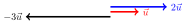
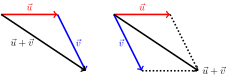

2. Vektory#
Lineární algebra se zabývá vícerozměrnými veličinami (vektory) a vztahy mezi nimi.
V části věnované lineární algebře se naučíte:
Ukážeme si, že fyzikální veličiny mohou být vícerozměrné nebo mnohorozměrné. Poté jsou reprezentovány vektory.
Ukážeme si, že vztahy mezi vektory je možné formulovat pomocí matic. Získáváme tak aparát, který je možno použít k popisu geometrických transformací (využití je při zobrazování), k popisu materiálové odezvy na gradient teploty či gradient koncentrace (Fourierův a Fickův zákon).
2.1. Motivace#
Jednou ze základních úloh v praxi je posoudit reakci objektu na působení vnějších sil. Například změna tvaru při namáhání. Pro popis úloh tohoto typu zpravidla dělíme těleso na malé elementy a popisujeme, co se s těmito elementy děje: o kolik se posunou, jestli a jak změní svůj tvar nebo objem a podobně.


Pro modelování deformace potřebujeme mít možnost jednoznačně identifikovat dílčí elementy a být schopni popsat změnu jejich tvaru a polohy při deformaci. K tomu je možno použít souřadnice. V prostoru jsou souřadnice tvořeny trojicemi, v rovině dvojicemi čísel. Takové objekty patří v matematice mezi vektory.
2.2. Příklady vektorů#
Základním objektem v lineární algebře je vektor. Nejčastěji vyjadřujeme vektory jako uspořádané \(n\)-tice nebo orientované úsečky.
Formální definici vektorů neuvádíme. Zjednodušeně řečeno, je to algebraická struktura s jistými pravidly, které nás opravňují s vektory pracovat tak, jak to v běžných případech potřebujeme. Tedy sčítat vektory, násobit vektory číslem anebo měřit úhel mezi dvěma vektory.
Dvourozměrné a trojrozměrné vektory se používají k práci s fyzikálními veličinami, u kterých si všímáme směru. Příklady zahrnují následující.
Rychlost pohybu.
Orientovaná úsečka, jejíž orientace udává směr pohybu a délka udává okamžitou rychlost.
Uspořádaná dvojice nebo trojice, kde jednotlivé komponenty udávají rychlost ve směru příslušných os.
Polohový vektor bodu v prostoru spojuje počátek s uvažovaným bodem. Opět můžeme modelovat jako orientovanou úsečku z počátku do příslušného bodu, nebo dvojici či trojici hodnot udávající souřadnice bodu. Pro pohybující se bod je tento vektor funkcí času.
Posunutí, tj. změna polohy v prostoru. Tento vektor spojuje počáteční a koncovou pozici posunutého bodu.
Síla a moment síly.
Spád skalární veličiny. Tento vektor dává do pohybu transportní děje, jako transport tepla, transport vody materiálem, transport iontů nebo molekul při impregnaci apod. Směr ukazuje, kterým směrem klesá veličina nejrychleji a velikost udává, jaká tato rychlost je.
Vícerozměrné vektory se používají u jakékoliv sady dat, kterou uspořádáme do sloupce nebo řádku. Poté má smysl pracovat s vektory libovolné dimenze. Příklady zahrnují následující.
Na konstrukci je zvoleno \(N\) bodů. Sledujeme změnu polohy těchto bodů. Pokud se body mohou pohybovat s jedním stupněm volnosti, dostáváme \(N\)-rozměrný vektor. Obecněji, pokud není pohyb omezen, musíme sledovat polohu ve všech třech nezávislých směrech a pracujeme s vektorem dimenze \(3N\).
Podobně jako předchozí příklad, ale můžeme pracovat s bodovými silami působícími na konstrukci.
Na objektu je zvoleno \(N\) bodů a sledujeme teplotu v těchto bodech.
2.3. Operace s vektory#
Násobení vektoru s číslem je definováno jako součin daného čísla a jednotlivých komponent vektoru, resp. jako vektor mířící stejným směrem jehož délka je odpovídajícím násobkem délky původního vektoru. (V případě záporného čísla násobíme absolutní hodnotou a otáčíme směr).
Pro \(\vec u = \begin{pmatrix} 3\cr 1\end{pmatrix}\) platí \(3\vec u = \begin{pmatrix} 9\cr 3\end{pmatrix}\).
Grafické násobení: 
Sčítání vektorů je definováno po složkách pro uspořádané \(n\)-tice a jako celkové posunutí složené ze dvou dílčích posunutí pro orientované vektory. Variantou grafického sčítání vektorů je doplnění na rovnoběžník, viz obrázky.
Algebraický součet. Pro \(\vec u = \begin{pmatrix} 3\cr 1\end{pmatrix}\) a \(\vec v = \begin{pmatrix} 2\cr 5\end{pmatrix}\) platí \(\vec u +\vec v = \begin{pmatrix} 5\cr 6\end{pmatrix}\).
Grafický součet. Buď umístíme jeden vektor do koncového bodu druhého vektoru, nebo doplníme na rovnoběžník.
